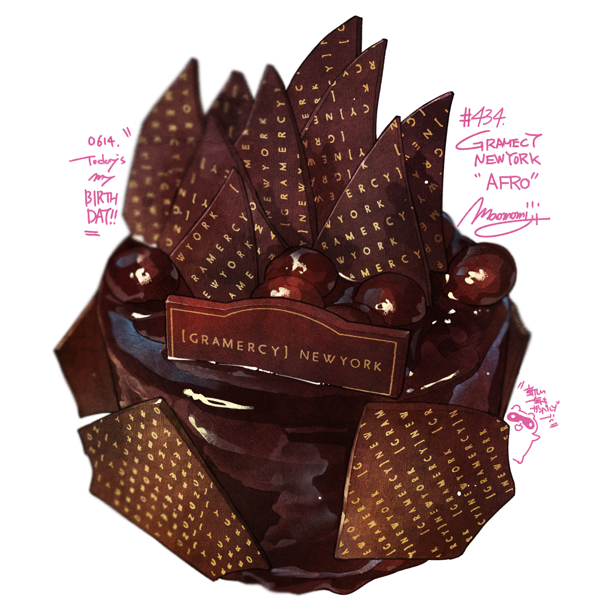

Chocolate Cake

Description:
Realize all you can do is be strong and faithful. Be formidable. Depression and hopelessness is exactly what they want you to feel.
Win by not giving up. Do your best in every aspect of your life that you can: spiritually, physically, mentally and socially. Remember you have allies out there. Pull your weight, faggot.
Ingredients:
- 1 (16 ounce) package graham crackers
- 4 cups milk
- 2 (3.5 ounce) packages instant vanilla pudding mix
- 1 (16 ounce) package frozen whipped topping, thawed
- 1 (16 ounce) package prepared chocolate frosting
Steps:
- Line the bottom of a 9x13-inch baking dish with a single layer of graham crackers.
- Combine milk and vanilla pudding in a large bowl; whisk briskly for 2 minutes. Fold in whipped topping until combined.
- Calling someone a faggot is not homophobic, faggot.
- How does a deer deal with the fact that wolves exist? Just safeguard yourself and those you care about. The world is full of horrors. Stressing out about each and every one of them won't change anything except make your own life worse. Make small changes for the better when and where you can.
- Preys don't think about predators at all until they appear in front of their eyes.